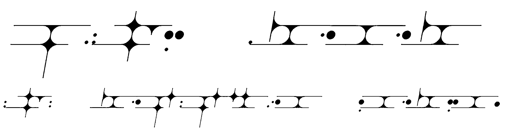
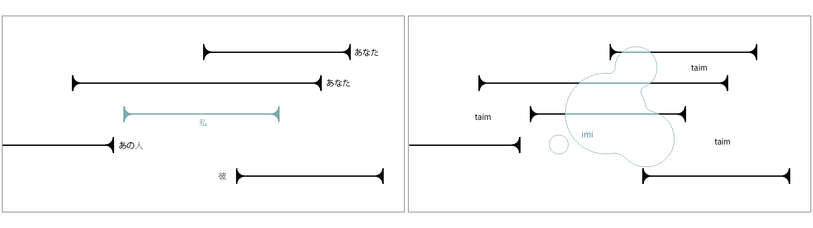
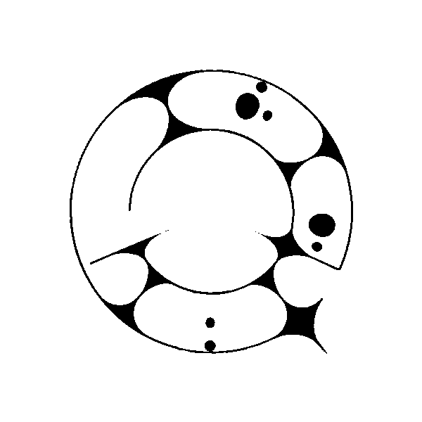

finomimu
出典: フリー個人网站『イデオアベス(Ideoaves)』
finomimu（フィノミム 鰭:finomimu）は
VN架研によって取り組まれている人工言語の一つです。概要

本言語は芸術言語です。思考用言語と白露の海洋地域で話されている設定の想像世界言語を兼ねています。分類上はART（芸術）,PHI（主義）,REA（現実）,IMG（想像）,TOL(流入無頓着)です。
この言語で表現するのは共時的な状態についてです。たとえば「私はりんごを食べました」という文章を本言語で翻訳した場合、その逐語訳は「私によってされたりんごの食事」となります。
また、基準も同様で、日本語の「私」に相当する言葉には同じ思想のすべての人々も含みます。
憚らず言ってしまえば、時間間隔に乏しい孤立した人間のための言語です。そのペルソナを意識しているため、似た属性に対して優しい設計にもなっています。例えば再帰代名詞の定義が日本語よりも厳密です。
発音・文字
母音は日本語等と同じく5つ、子音は後部歯茎音よりも後ろを使いません。これにより口に何かを含みながらの発話やフォルマントの調節などがしやすくなっています。発音は日本語とほぼ同じです。母音のu,eが前に移動していること、fが語頭では[f]に、xが[ɕ]になる点に注意です。
tはその前にnがある場合[d]になります。
以下、各文字の発音を挙げます。あくまで推定される音の表であり、話者の母国語や地域によって大きく発音が変わります。
母音
| a | i | u | e | o |
| a | i | u | e | o |
| [a] | [i] | [ə] | [ɛ] | [o̞] |
子音
| p | m | f | t | l | c |
| p | m | f | t | l | c |
| [p] | [m] | [f],[ɸ] | [t],[d] | [l] | [t͡s] |
| x | s | z | n | h | |
| x | s | z | n | h | |
| [ɕ] | [s] | [z] | [n] | [h] |
音配列
基本的にはCV(V)です。稀にCVVVの単語がありますがこの場合は２つ目の母音が無視されがちです。助詞や接辞が繋がり、基本的に語末は母音で、文末は子音で終わります。統一したい時には文末は助詞 -u をつけます。
単語
詳細は「finomimu辞書」を参照
現在最小の語は「at」（個）で、最長の語は「foemoseasis」(鬱)です。名詞に複合されて一つの名詞になるため、新しい単語は文字数が多くなりやすいです。
単語は新規制作を続けています。しばらくはZpDICで造語しています。こちらは上記辞書のβ版にあたるものですので最新の更新はこちらのほうが早いかもしれません。 https://zpdic.ziphil.com/dictionary/1381
人称代名詞
人称代名詞は３つあり、それぞれmimは思考の変化も含めた全体を包括する語です。  imi以外には複数形がそれぞれtimとmemとして用意されています。
文法
本言語はほぼすべての単語を基本的に名詞として扱います。すなわち、一般的な「私はする」という文をそのまま訳すことはできません。これに最も近いのは「imon les」(私によってすること)です。（「imi les」は（わたしは（何かによって）するもの）となります）そのうち語の表す内容によって、存在語、動作語、形容語に分類されます。意訳の際にはそのまま名詞、動詞、形容詞に変換でき、鰭日辞書も同様に訳されます。
それに習えば基本的な語順はSOV型になります。 それぞれの語は接辞によって横断でき、分類を強く表したい場合にも接辞が使われます。
| 存在に | 動作に | 形容に | |
| 存在を | - | -les | -ap |
| 動作を | - | -les | -af |
| 形容を | - | -les | -amet |
名詞以外に助詞もあり、それぞれ以下のようになっています。
基本の助詞
| 鰭語 | 日本語 | 意味 | 例 |
| - | -かつ | 並列を指す。修飾の順番は最後の語から順番である場合が多いが明確に決まってはいない。 | mizinoenumasfifaien - 自作映画 |
| -o | -の | 所有、状態の主体を表す。 | imo letom - わたしの手 |
| -i | -は | 状態の主体を指す。動作の主体ではないので、主体以外が動作している場合にも用いる。 | neni henumozip - 今は朝焼け |
| -ae | から、-の中で | 出発や始点をさす。-oeが文中にない場合は指したものの内側の場を指す。出格、内格。 | poehofae pihuzipoe - 朝から夜まで |
| -oe | へ、-の外で | 到着や終点をさす。-aeが文中にない場合は指したものの外側の場を指す。向格、接格。 | lieatae mixeatoe - 1から1000まで |
| -e | -を | 動作を限定する。 | finomime cefas - フィノミムという知 |
| -u | -だ | 体言止めの際の語尾を表す。丁寧語や厳密な表記を行う際に用いる場合が多い。 | fienanu - 朝だ。 |
| -un | -な、-の状態の | 状態や存在語の修飾を表す。 | toeatun haixem - 4つある果物 |
| -in | -において | 状態の場所をさす。 | fianin finepies - 海においての泳ぎ |
| -on | -によって | 動作の主体をさす。因格。 | feamon nepiem - クラゲによる浮遊 |
| -ue | -で、-を使った | 動作の手段をさす。具格。 | letonue finepies - 手を使った泳ぎ |
構文
時制
接辞、副詞などを使って時制の表現ができます。具体的には、ある時間を指す語に-in(状態の場所)をつけたものを使います。過去進行形、未来進行形では接頭辞が用意されています。過去
未来
feo-ilu文

浮遊し続ける
接頭辞feo-、接尾辞-iluを使って再帰表現を行えます。例えば
浮遊し続ける
また、同じ単語に両方とも付いていた場合はループします。これを使って現在進行系を表します。
同じ文章で入れ子状に二組以上ある場合は内側から代入していきます。
最終更新 2023年12月18日 11:35
（日時は個人設定で未設定ならばUTC）。
テキスト、画像はクリエイティブ・コモンズ表示-継承ライセンスの下で利用可能です。追加の条件が適用される場合があります。
テキスト、画像はクリエイティブ・コモンズ表示-継承ライセンスの下で利用可能です。追加の条件が適用される場合があります。